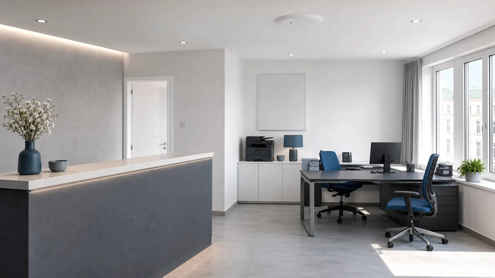

WLAN für Arbeitsbereiche
Access Points werden passend zu Arbeitsplätzen, Besprechungsräumen, Empfangs-, Lager- oder Gästebereichen geplant und positioniert.
Kleine Büros · Co-Working-Spaces · Gastronomie
CONNECT Business
Wir planen und realisieren professionelle Netzwerkinfrastrukturen mit Glasfaser, Router, Netzwerkschrank, LAN, WLAN und zentraler Netzwerktechnik – inklusive Überprüfung und Dokumentation.
Wir schaffen die digitale Infrastruktur. Die Einrichtung von Servern, PCs und Unternehmenssoftware erfolgt durch Ihren IT-Dienstleister.

Typische Anforderungen
Kleine Unternehmen benötigen keine überdimensionierte IT-Infrastruktur. Entscheidend ist ein sauber geplantes Netzwerk, damit Internet, LAN, WLAN und vernetzte Geräte zuverlässig zusammenarbeiten.
Access Points werden passend zu Arbeitsplätzen, Besprechungsräumen, Empfangs-, Lager- oder Gästebereichen geplant und positioniert.
Alle zentralen Netzwerkkomponenten werden im Netzwerkschrank übersichtlich zusammengeführt, beschriftet und für Wartung oder spätere Erweiterungen vorbereitet.
Arbeitsplätze, Drucker, Kassensysteme, IP-Telefonie und weitere Netzwerkgeräte werden sinnvoll eingebunden und strukturiert angeschlossen.
Optional getrenntes WLAN für Gäste, Besucher oder Kunden – passend zur Netzwerkinfrastruktur und den Anforderungen des Betriebs.
Leistungsumfang
Klare Schnittstelle
Eine klare Aufgabenverteilung sorgt für einen reibungslosen Ablauf. Bauherr, Elektriker, Haustechnikpartner und wir stimmen ihre Aufgaben ab und schaffen gemeinsam die Grundlage für eine zuverlässige Netzwerkinfrastruktur.
Beschreiben Sie Ihr Vorhaben in wenigen Worten. Auf Basis Ihrer Angaben erhalten Sie eine kostenlose Ersteinschätzung und eine Empfehlung für die nächsten Schritte.
Klare Planung · abgestimmte Umsetzung · vollständige Dokumentation